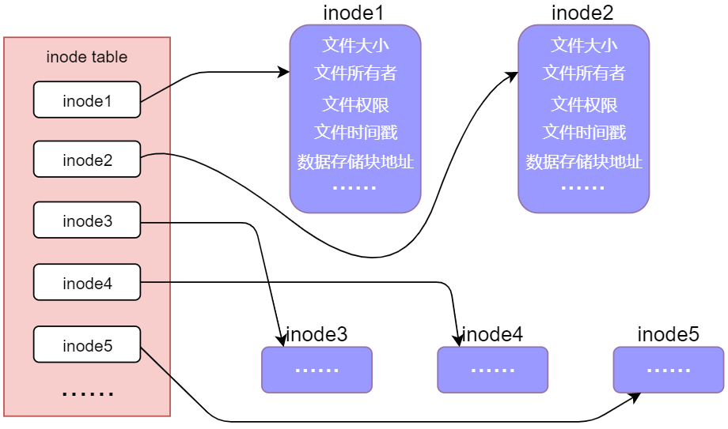

说明：本文参考了正点原子的Linux pdf教程，相当于一个个人的学习笔记，官网链接 http://47.111.11.73/docs/index.html
标准输入输出
基本文件 I/O
在linux操作系统中，一切设备、进程都可以用文件来表示。掌握了基本的文件输入输出方法也就能控制板子上的各个外设了。
对于一个文件，最基本的控制方法有四种，即打开、关闭、读取和写入。
一般的文件读写操作如下：
|
常用函数如下：
-
open(), 输入文件路径和打开方式，返回文件描述符。如果描述符为负代表打开失败。
常用的打开方式有下面几种。参数 含义 O_RDONLY 只读 O_WRONLY 只写 O_RDWR 可读可写 O_TRUNC 打开的同时将文件原本内容丢弃 O_APPEND 在文件末未追加 O_DICTIONARY 必须是目录 O_CREAT 如果没有则创建，但要额外传递一个mode参数 O_EXCL 没有则创建，有则返回错误 O_NOFOLLOW 不接受符号链接 这些标志位可以单独使用，也可以使用 或（|）运算一次使用多个。
如果要创建文件的话，需要一个额外的mode参数。该参数用于表示文件权限，与 chmod 命令的数值表示方法类似。如八进制 777 表示任何人可读可写可执行。 -
read(), 输入为文件描述符，缓冲区指针和读取字节数。返回值为成功读取的字节数，可能小于设定值。出错时可能返回 -1
-
write(), 输入参数为文件描述符，缓冲区指针和写入字节数。返回值为成功写入的字节数。若运行时出错可能返回 -1
-
close(), 关闭文件，输入文件描述符，关闭成功返回0，失败返回-1
-
lseek(), 用于设置文件读写指针，输入文件描述符、偏移量和一个模式，该模式的定义如下：
参数 含义 SEEK_SET 从文件开头计算目标偏移量 SEEK_CUR 从当前位置计算目标偏移量 SEEK_END 从文件末尾计算目标偏移量 返回值为函数执行后，从文件开头计算，当前指针的偏移量。
需要注意的是 lseek 函数是可以让偏移量超出文件原本的大小的，这种情况被称为“空洞文件”
进程退出和错误处理
linux中的各种函数基本都是在正常时返回零或一个正数，在出错时返回一个负数。linux中定义了一些常见的错误码，可以通过返回值判断错误类型。
同样，每个linux进程都有一个自己的全局变量 errno ，该变量会始终记录最近一次的错误码。
但是我们很难记住每一个错误码的具体含义，因此就有了 stderr 函数。该函数可以接收一个错误码，然后把它翻译成一个字符串描述。
|
但是这样要写好多代码，于是又有了 perror 函数，该函数可以自己去读 errno ，然后把它翻译好后打印出来。于是我们的代码可以改成：
|
一般的程序返回，都会直接写 return ，但有人也可以使用 _exit() 和 _Exit() 函数，这两个函数定义在 stdlib.h ，用法和 return 一样。
同时也可以使用 stdlib 中的 exit() 函数。该函数会对进程的内存清理的更加彻底。
竞争冒险与原子操作
一个文件可以被一个进程打开多次，也可以被多个进程打开。每个文件描述符拥有独立的读写指针与偏移量。如果想创建两个共享指针的描述符可以使用 dup() 或 dup2() 函数进行描述符的复制。
但是，由于linux具有复杂的任务调度机制，多个进程同时访问一个文件时可能会发生错误，这被称为竞争冒险现象。
解决竞争冒险现象的一个办法是原子操作。
所谓原子操作，就是把许多不同的操作绑定到同一个函数中，在函数执行完之前不会进行任务切换。
例如：pread() 和 pwrite() 函数，允许在读写的参数最后追加一个 offset 参数，相当于将 lseek() 函数与 read(), write() 绑定成一个原子操作。
fcntl 与 ioctl
只通过 read(), write() 两个函数有时很难满足我们对文件进行复杂操作的需求，因此也就有了 fcntl 和 ioctl 两个进阶版的文件操作函数。
- fnctl() 是对文件进行一些更高级的控制。需要输入一个文件描述符，一个command，还有该command对应的参数。若出错则返回-1，否则根据传入的 command 决定返回值。
command 通常以 F_ 开头，如 F_GETFD, F_SETFD, F_GETFL 等。 - ioctl() 该函数定义在<sys/ioctl.h>，允许用户完成各种各样的复杂操作。同样需要文件描述符和一个 command ，但操作内容会更加丰富。
文件的属性与其他操作
Linux系统中，一切皆文件。因此必须了解一些常见常用的文件属性。
linux会在每个存储介质（如硬盘、SD卡）存放一张 inode 表，这个 inode 表会记录各个文件的属性以及存放地址。如下图所示：

下面介绍一些常见属性：
- 文件类型
- 普通文件：这种文件指的是普通的有一些硬盘上的存储信息可以访问的文件。又分为文本文件和二进制文件
- 目录文件：目录也是文件的一种，也可以使用 open() 进行打开
- 设备文件：将设备抽象成一个文件，来对它进行操作，又分为字符设备文件和块设备文件
- 符号连接文件：这是一个符号链接，真正的文件再别的地方
- 套接字文件：用于 socket 网络编程
- 管道文件：用于进程间通讯
- …
- 文件属主
简单来说就是文件是哪个用户创建的，属于哪个用户，哪个组。
可以使用命令行的 chown 接口改变文件的属主，同时在 unistd.h 中也定义了一个相同的 C 版本的 chown 函数。 - 文件访问权限
文件的访问权限可以通过 chmod 命令修改。同样该命令在 <sys/stat.h> 有一个 C 函数版本
详细来说文件访问权限分为创建者，同组用户，其他用户三种用户和可读可写可执行三种权限一共 3x3=9 项权限。
编程时可以使用 unistd.h 中的 access() 函数来查看权限。传入文件路径和查看模式，返回0表示有权限，-1表示无权限。
查看模式有以下几种：
| 参数 | 含义 |
|---|---|
| F_OK | 文件是否存在 |
| R_OK | 是否可读 |
| W_OK | 是否可写 |
| X_OK | 是否可执行 |
- 文件的时间属性
下面介绍一些其他的文件操作
-
硬链接与软连接
-
文件删除
-
文件重命名
-
目录的一些操作